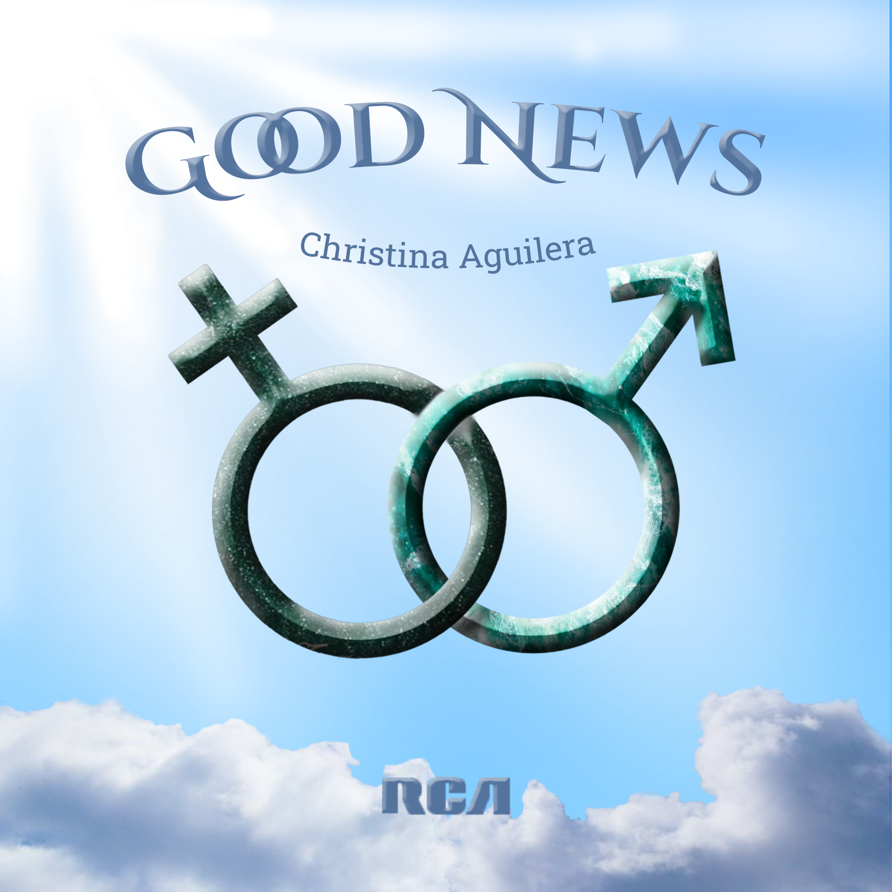
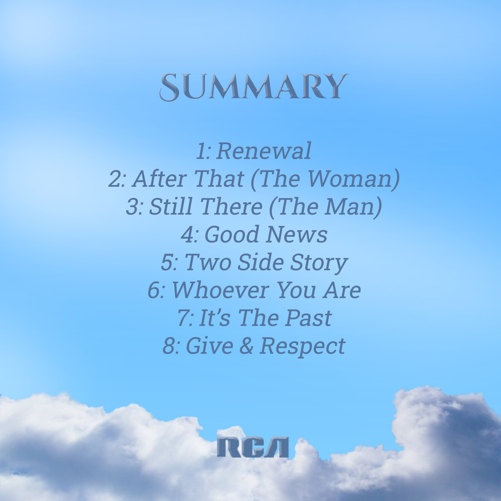

Créa & Design
Semaine 3
Prise de vue avec Adobe
Durant cette semaine j'ai pris Adobe Premiere en main et, avec le groupe avec qui j'ai été associé cette semaine, nous avons réalisé un court métrage. J'ai aussi réalisé un projet en solo : un interview type Konbini.
Semaine 2
Fondamentaux UX/UI avec Figma
Ici j'ai réalisé une application de musique dédiée au même artiste que la semaine 1 c'est à dire Christina Aguilera. On devait essayer de trouver au moins une idée originale pour attirer les fans de l'artiste sur notre application.
Semaine 1
Visual design avec Photoshop
La réalisation de la première semaine de Créa était une pochette d'album fictif pour un artiste. De plus cette artiste sera la référence pour nos autres travaux dans cet axe. Le mien est Christina Aguilera.

